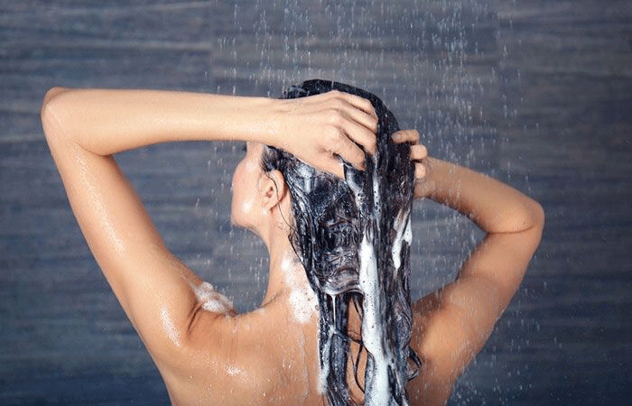
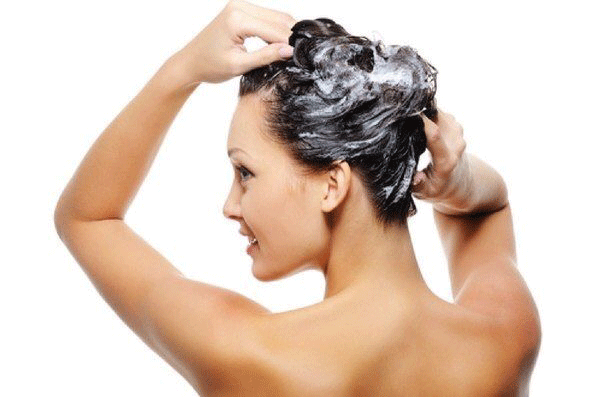

Как правильно мыть голову
Начнём с азов
Самое простое окажется очень сложным, если об этом ничего не знать. Как правильно мыть голову? От этого зависит состояние волос и, соответственно, твой внешний вид. О выборе шампуня и бальзамов будет следующий пост, а сейчас предположим что выбор уже сделан.
Перед мытьем тщательно расчеши волосы
Пользуйся массажной щеткой для волос. Если на волосах много пенки для волос и лака, этого делать не следует, т.к. ты повредишь волосы, особенно пострадают концы.
Используй шампунь, соответствующий твоему типу волос.
Специалисты рекомендуют периодически менять шампуни, так как волосы привыкают к продукту, и он перестает оказывать нужный эффект.
Наноси шампунь правильно
Чаще всего начинают мытье головы с того, что наливают шампунь в руку или прямо на голову, а затем пытаются его интенсивно растереть и распределить по всей голове. А правильно и удобнее — налить немного в руку, растереть в ладонях, затем вытереть о волосы и, добавив немного воды, тщательно вспенить. При этом не нужно скрести голову так, будто ты месяц не мылась или работала в шахте. Добавляй побольше воды и мягкими движениями вспенивай шампунь.
Если у тебя длинные волосы
Мыть голову нужно наклонив ее вниз. Волосы при мытье не спутывать! Не взбивай мочалку! Руки в шампуне запусти между волосами и потри кожу головы. Затем распредели шампунь по длине волос и протирающими движениями мой волосы сверху от головы до кончиков, не забрасывая пряди на голову. Пену смой водой. Если на волосах много укладочных средств, повтори мытье дважды, а иногда и трижды.
Дополнительное питание волос
Для тонких, мягких или коротких волос я рекомендую спрей-кондиционер. Для длинных волос обязательна обработка бальзамом. Волос способен питаться от луковицы до 10-15 см длины. Дальше начинается ороговевшая и омертвевшая структура волос, которую можно оздоровить и придать ей живость и блеск только извне, т.е. масками и бальзамами.
Как правильно высушить волосы
Правильно — не тереть их полотенцем. Заверни голову в полотенце и подожди несколько минут. Полотенце впитает влагу. Сними его.Растряси волосы и дай им остыть и слегка подсохнуть. Мокрые волосы очень тянутся и их легко травмировать, поэтому лучше их не расчесывать сразу после мытья. Длинные волосы нужно сначала подсушить теплым воздухом у корня и лишь потом начинать делать укладку или сушить феном на браш.
Температура воды при мытьe волос
Вода ни в коем случае не должна быть горячей. От горячей воды волос размягчается и рвется при мытье, да и сальные железы начинают работать интенсивнее. Поэтому вода для мытья головы должна быть немного теплее летней, но все-таки комфортной. Можно привыкать мыть голову, постепенно делая воду прохладнее.
Надеюсь статья тебе понравилась и была полезной. Следи за новостями и обновлениями.